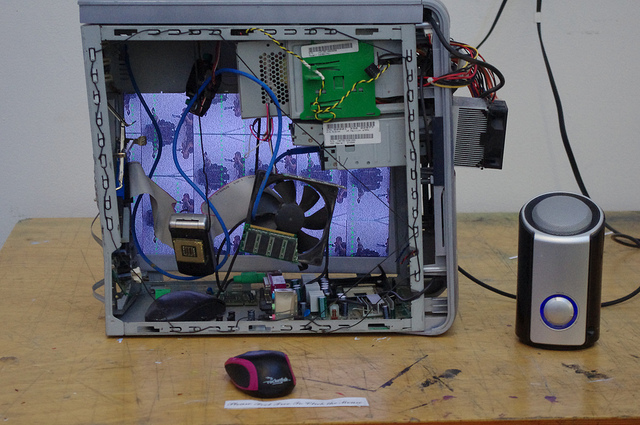
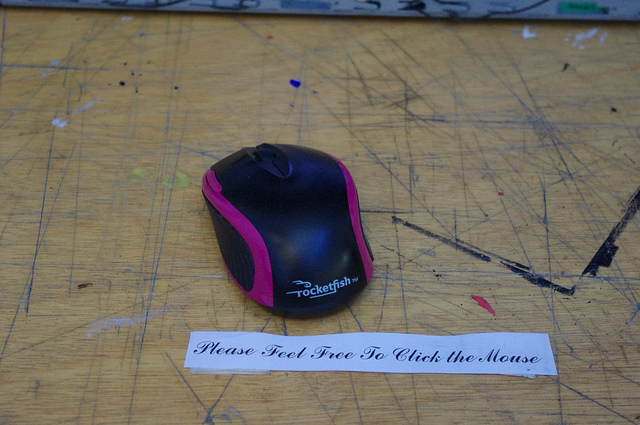

Collage
2011 - Multimedia Collage using recycled electronics, live video, Flash, Html, Javascript
Collage was made in an attempt to explore the medium and idea of what collage is in a more abstract way. First the recycled electronics create a physical assemblage sculpture containing a screen, speaker, and mouse. The screen is connected to a computer that is displaying a digital image collage with live elements via webcam. Furthermore, the web document itself is a collage with layers of various web based environments. A sound collage is added and is activated when the user interacts with the mouse connected to the sculpture.

